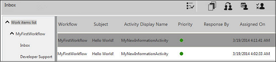

No
The Inbox lists all open work items assigned to the user that awaiting action or response. The columns displayed in the default view are:
The Subject column lists work items in bold type. When the user takes ownership of the item, its display changes from bold to normal. Double-clicking on an item displays its details in Work Item Details.
Default columns in the Work items list

See also: Customizing Work Items List Views